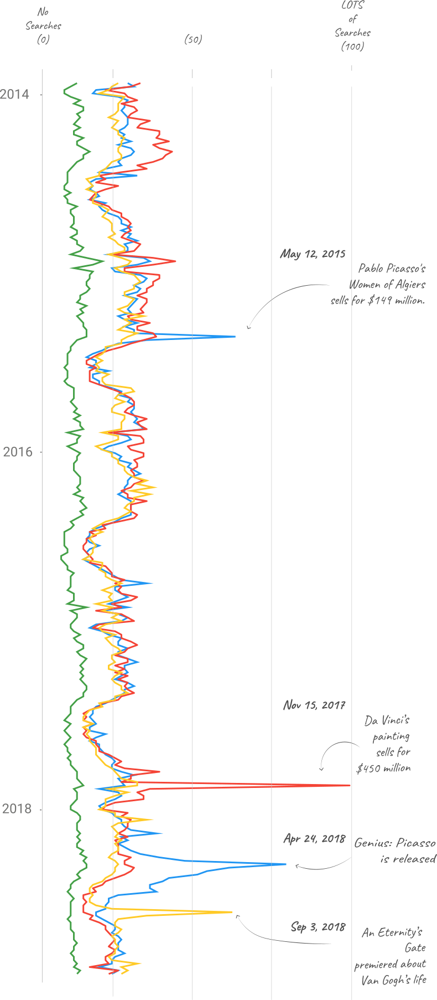

An overview of Pablo Picasso's use of color in his career
Pablo Ruiz Picasso (25 October 1881 – 8 April 1973) was a Spanish painter and a polymath that dabbled in sculting, poetry, and writing. He was born in Spain but spent most of his life in France. He is considered one of th most influential artists of his time which is reflected by Google Search Indexes rivaling timeless greats like Leonardo Da Vinci. Even as a child he showed prodigious talent in the traditional sense. While attending art school, he started inventing his own style of doing things, distancing himself from traditionalism. He co-founded the Cubist movement and a wide variety of styles.
Picasso ranks highest among painters in Google searches.

Scholars classify Picasso's art into distinct periods.
Some periods of Picasso's life are characterized by distinct use of color. Two of these periods are the Blue Period (1901–1904), and the Rose Period (1904–1906). Upon randomly sampling colors from 973 paintings from his career, an average color usage for each year were generated. While there are different ways to represent color (i.e. HSV, RGB, CYMK), only the hue was considered by the pipeline.
Blue Period (1901-1904)
Picasso's Blue Period, characterized by sombre paintings rendered in shades of blue and blue-green, only occasionally warmed by other colors. By randomly sampling from each of his paintings during this period, it is apparent that his use of blue increases relative to other colors. During this period, he uses more blues relative to other colors which are cheaper to acquire i.e. browns, oranges. Aligning with the sombre theme, the canonical example of Picasso's work during the Blue Period is "The Old Guitarist" depicting an old, blind, disheveled man playing in the streets of Barcelona, Spain.
Rose Period (1904-1906)
Picasso's Rose Period follows the sombre tone of the previous arc in his life. Interestingly, art historians believe that these artistic years coincide with a period of increased personal joy and romance for Picasso. His works shifted to a warmer palette of colors as shown by the increased abundance of reds and oranges in these years. He shifted from the gloomy subjects that were pervasive in the previous years to painting things that are more spirited i.e. clowns, kids, and families (although Picasso didn't have the best relationship with his parents). A representative example of this period is "Garçon à la pipe" which shows a boy holding a pipe with a wreath of flowers.
Primitive Period (1907-1909)
The Primitive Period was short-lived and was driven by a muse that Picasso gained after visiting ethnographic museum in Paris. Picasso painted in a style which was strongly influenced by African sculpture and particularly traditional African masks. While the color usage is similar to the ones he uses for the remainder of his life, the technique of transforming the human figure into wood or stone foreshadows the style of art that he later pioneers. Additionally, his work during this period was met with public outrage leading Picasso to refrain showing some of his work publically till later in his life such as "Les Demoiselles d'Avignon" pictured below.